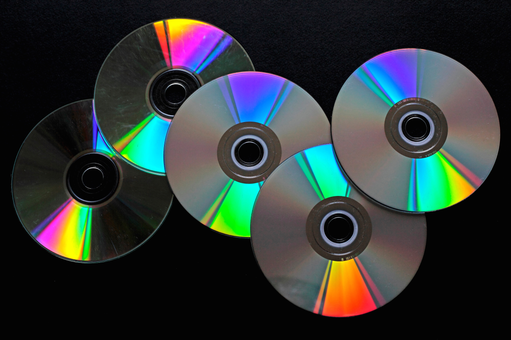
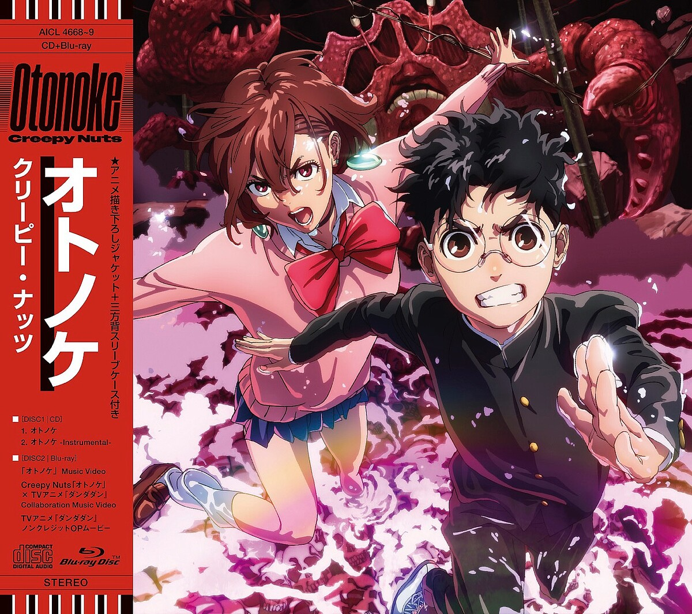
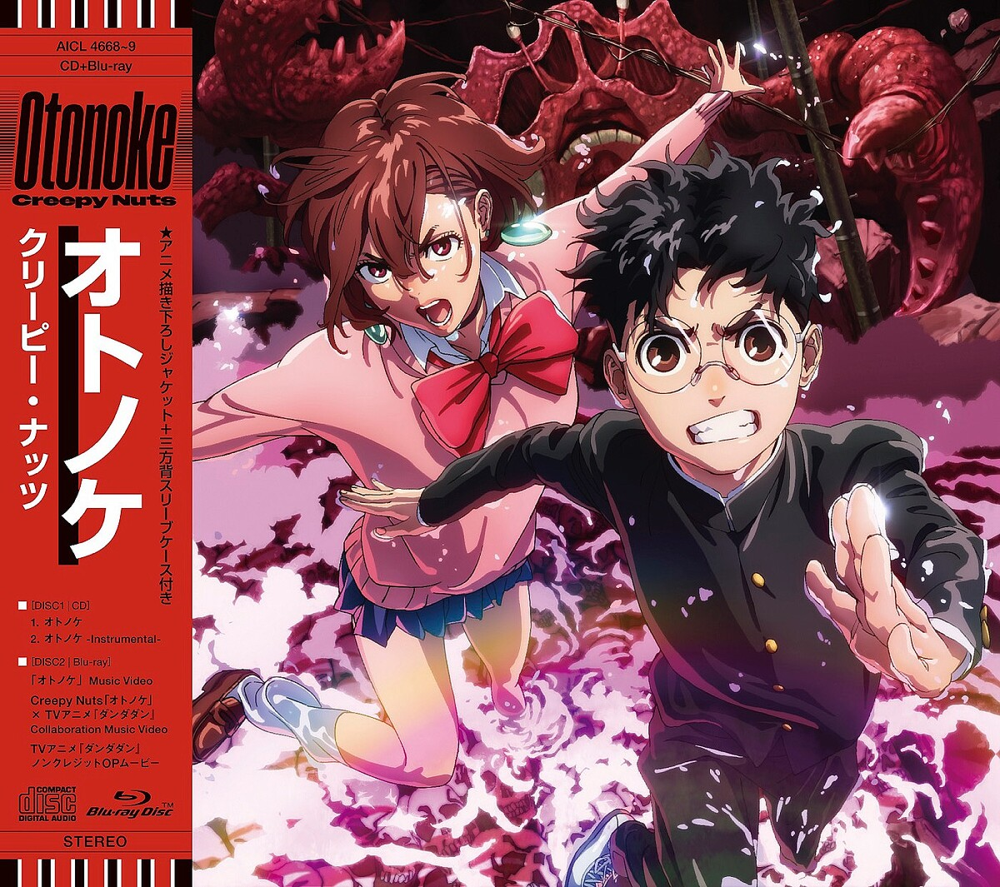

好きなもの
CD
好きな理由
私は音楽を聞くことが好きで、好きなアーティストのCDを集めることが楽しいからです。でも最近CDの値段が高くてあまり買えていません。そんな時は図書館に行って借りることができます。図書館には色んな世代のものが置かれており、新しい音楽と出会うきっかけを得ることができます。おすすめです。
関連して欲しいもの
Creepy NutsのCD
私は音楽を聞くことが好きで、好きなアーティストのCDを集めることが楽しいからです。でも最近CDの値段が高くてあまり買えていません。そんな時は図書館に行って借りることができます。図書館には色んな世代のものが置かれており、新しい音楽と出会うきっかけを得ることができます。おすすめです。
Creepy NutsのCD
